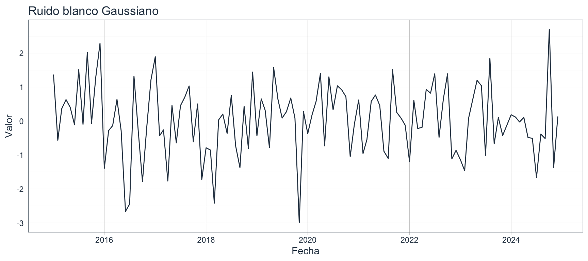
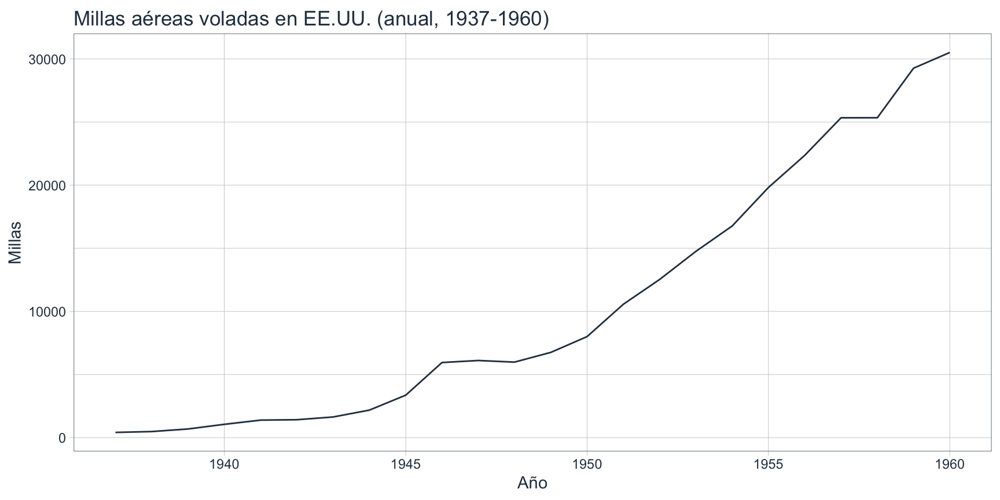
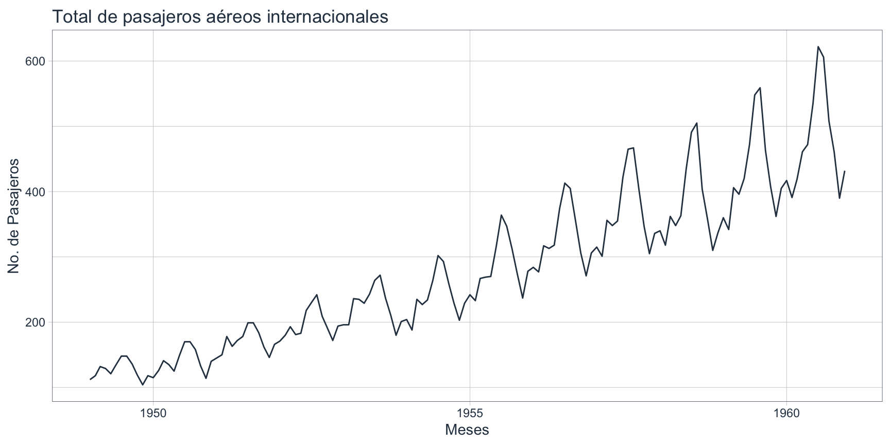

2 Sección 1 · Naturaleza de las series
3 Bienvenidos
Al terminar esta unidad vas a poder mirar una serie de tiempo, describir su comportamiento (tendencia, ciclo, estacionalidad, irregularidad), evaluar si es estacionaria, transformarla si hace falta y dejarla lista para alimentar un modelo predictivo.
Esta unidad es preparatoria. No vas a pronosticar todavía: primero vas a aprender a leer una serie y a manipularla con las herramientas del ecosistema tidyverts + timetk en R, dentro del flujo de trabajo tidyverse.
4 Naturaleza, componentes y descomposición
4.1 ¿Qué es una serie de tiempo?
Una serie de tiempo es una secuencia de observaciones de una variable registradas a lo largo del tiempo, en intervalos regulares o irregulares. A diferencia de los datos de corte transversal (cross-section), en una serie de tiempo el orden importa y las observaciones suelen estar correlacionadas con su propio pasado.
Si desordenás las filas de un dataset de corte transversal, no pasa nada. Si desordenás las filas de una serie de tiempo, rompés la estructura. Toda la econometría de series de tiempo se apoya en esta idea.
- Regulares vs. irregulares: la mayoría de los modelos asumen observaciones equiespaciadas. Si tenés fechas faltantes, hay que “rellenar” la serie antes de modelar.
- Univariadas vs. multivariadas: en esta unidad trabajamos con una sola variable por serie.
- Discretas vs. continuas: en economía casi siempre son discretas (promedio mensual, valor trimestral).
Referencia: Hyndman & Athanasopoulos (2021), cap. 1; Gujarati (2017), cap. 12.
4.2 Tratando datos temporales en R
Veamos nuestra primer serie de tiempo: bioetanol.csv
Rows: 195
Columns: 2
$ tiempo <chr> "1/1/2010", "1/2/2010", "1/3/2010", "1/4/2010", "1/5/2010",…
$ produccion <dbl> 771, 4791, 4445, 4549, 5210, 12069, 14575, 15258, 17729, 22…Como era esperable tiempo: chr (texto), no es fecha.
Código
tibble [195 × 2] (S3: tbl_df/tbl/data.frame)
$ fecha : Date[1:195], format: "2010-01-01" "2010-02-01" ...
$ produccion: num [1:195] 771 4791 4445 4549 5210 ...En este curso vamos a usar principalmente:
tibble, para manipulación tidyverse, visualización con timetk, splits y validación.
4.3 Primer visualización indispensable (timetk())
4.4 Naturaleza de las series: catálogo visual
Llamamos naturaleza de una serie de tiempo al conjunto de patrones que la caracterizan y la distinguen de cualquier otra: cómo crece o decrece, si repite comportamiento en plazos fijos, si tiene fluctuaciones variables y cuánto “ruido” arrastra. Identificar esta naturaleza es el primer paso del análisis: condiciona las transformaciones que vamos a aplicar, los modelos que tienen sentido y, en definitiva, la calidad del pronóstico que podamos hacer más adelante (Hyndman & Athanasopoulos, 2021, cap. 2; Gujarati, 2017, cap. 12).
Toda serie de tiempo se puede pensar como la combinación de cuatro elementos (Hyndman & Athanasopoulos, 2021, sección 2.1):
Tendencia (T) — movimiento de largo plazo. La serie puede crecer, decrecer o permanecer estable a lo largo de los años. Ejemplo: el aumento sostenido en la producción de Bioetanol.
Estacionalidad (S) — patrón que se repite a intervalos fijos y conocidos (cada mes, cada trimestre, cada lunes). Ejemplo: la suba de temperaturas en diciembre-enero en nuestro país.
Ciclo (C) — fluctuaciones de duración variable, sin calendario fijo, típicamente de varios años. Ejemplo: las manchas solares cada ~11 años en sunspot.month.
Irregularidad (I) — el “ruido” que queda, todo lo que no es T, S ni C. Idealmente, fluctuaciones aleatorias alrededor de cero.
La tendencia y el ciclo suelen agruparse en un único componente (la tendencia-ciclo), porque distinguirlos por separado requiere información adicional. Para este curso adoptamos la descomposición en cuatro componentes.
4.5 Catálogo visual
Para las cinco series que ser grafican a continuación, intenta responder estas preguntas:
- ¿Hay tendencia (subir/bajar de manera sostenida)?
- ¿Hay estacionalidad (patrones que se repiten a un intervalo fijo)?
- ¿Hay ciclos (subas/bajadas que no respetan un calendario fijo)?
- ¿La varianza es constante o cambia con el nivel?
4.5.1 El ruido blanco:
Código
set.seed(42)
ruido_blanco_tbl <- tibble(
fecha = seq.Date(
from = as_date("2015-01-01"),
to = as_date("2024-12-01"),
by = "month" # 120 observaciones mensuales
),
valor = rnorm(n = 120, mean = 0, sd = 1)
)
ruido_blanco_tbl |>
plot_time_series(
.date_var = fecha,
.value = valor,
.title = "Ruido blanco Gaussiano",
.x_lab = "Fecha",
.y_lab = "Valor",
.smooth = FALSE, # sin suavizado: queremos ver el ruido crudo
.interactive = FALSE
)
Un ruido blanco es una serie cuyas observaciones son independientes entre sí, con media y varianza constantes en el tiempo. No tiene tendencia, ni estacionalidad, ni ciclo. Si una serie se comporta como ruido blanco, no hay nada predecible que valga la pena modelar.
4.5.2 Airmailes
Time Series:
Start = 1937
End = 1960
Frequency = 1
[1] 412 480 683 1052 1385 1418 1634 2178 3362 5948 6109 5981
[13] 6753 8003 10566 12528 14760 16769 19819 22362 25340 25343 29269 30514Código
# A tibble: 24 × 2
fecha millas
<date> <dbl>
1 1937-01-01 412
2 1938-01-01 480
3 1939-01-01 683
4 1940-01-01 1052
5 1941-01-01 1385
6 1942-01-01 1418
7 1943-01-01 1634
8 1944-01-01 2178
9 1945-01-01 3362
10 1946-01-01 5948
# ℹ 14 more rowstk_tbl() convierte el objeto ts nottem en un tibble con dos columnas: una para el índice temporal convertido a date (fecha) y otra para los valores (millas).
Código

Observamos una frecuencia anual, así que no hay estacionalidad. La tendencia es creciente sostenida (cada año se vuela más millas que el anterior, sin grandes oscilaciones). No tiene ciclos marcados. Es un ejemplo claro de “tendencia pura y simple”.
4.5.3 Nottingham: Temperaturas medias mensuales (1920-1939)
Time-Series [1:240] from 1920 to 1940: 40.6 40.8 44.4 46.7 54.1 58.5 57.7 56.4 54.3 50.5 ...Código
nottem_tbl <- nottem |>
tk_tbl() |>
rename(mes = index, temperatura = value) |>
mutate(mes = as_date(mes))
nottem_tbl |>
plot_time_series(
.date_var = mes,
.value = temperatura,
.title = "Temperatura en Nottingham",
.x_lab = "Meses",
.y_lab = "Grados Fahrenheit",
.smooth = FALSE,
.interactive = TRUE
)La serie nottem muestra: una estacionalidad marcada y regular (valle en enero, pico en julio) que se repite año tras año con la misma amplitud, sin que la media se desplace hacia arriba o hacia abajo.
4.5.4 Airpassangers.
Código
airpassengers_tbl <- AirPassengers |>
tk_tbl() |>
rename(fecha = index, pasajeros = value) |>
mutate(fecha = as_date(fecha))
airpassengers_tbl |>
plot_time_series(
.date_var = fecha,
.value = pasajeros,
.title = "Total de pasajeros aéreos internacionales",
.x_lab = "Meses",
.y_lab = "No. de Pasajeros",
.smooth = FALSE,
.interactive = FALSE
)
AirPassengers muestra la cantidad mensual de pasajeros aéreos internacionales entre 1949 y 1960: una tendencia creciente sostenida combinada con una estacionalidad anual que se amplifica con el nivel (los picos de verano son cada vez más altos). Es el ejemplo clásico de estacionalidad multiplicativa con tendencia. La consecuencia práctica: la estacionalidad no se puede modelar como un efecto constante (como en nottem), sino que necesita un tratamiento proporcional al nivel — lo que podría justificar una transformación logarítmica.
4.6 Componentes formales de una serie
Toda serie de tiempo se puede pensar como la combinación de cuatro componentes:
- T = Tendencia: movimiento de largo plazo.
- C = Ciclo: fluctuaciones de duración variable, no atadas a un calendario.
- S = Estacionalidad: patrón que se repite a intervalos fijos.
- I = Irregular (o ruido): lo que queda.
Hay dos formas clásicas de combinarlos:
| Modelo | Fórmula | Cuándo usarlo |
|---|---|---|
| Aditivo | \(Y_t = T_t + C_t + S_t + I_t\) | La amplitud de la estacionalidad es constante en el tiempo. |
| Multiplicativo | \(Y_t = T_t \cdot C_t \cdot S_t \cdot I_t\) | La amplitud de la estacionalidad crece o decrece con el nivel. |
¿Aditivo o multiplicativo?
Una regla práctica: si al graficar la serie los “dientes” de la estacionalidad se van haciendo cada vez más grandes a medida que la serie crece → multiplicativo. Si los dientes tienen siempre el mismo tamaño → aditivo.
En la práctica, aplicar log() a una serie con estacionalidad multiplicativa suele “convertirla” en aditiva, porque log(T·S) = log(T) + log(S). Por eso el logaritmo es una de las transformaciones más usadas. (en este curso nos concentraremos en series de componentes aditivos)
- En un modelo aditivo, los efectos de la estacionalidad y la tendencia se suman.
- En un modelo multiplicativo, los efectos se multiplican (más realista cuando la varianza crece con el nivel).